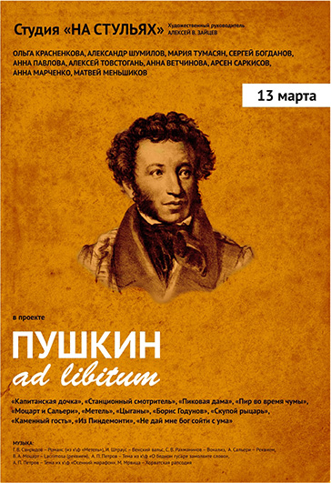
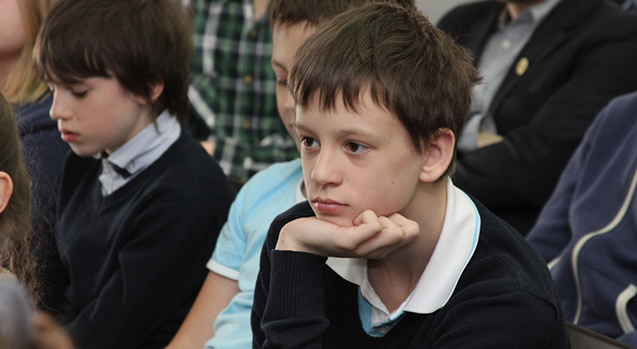
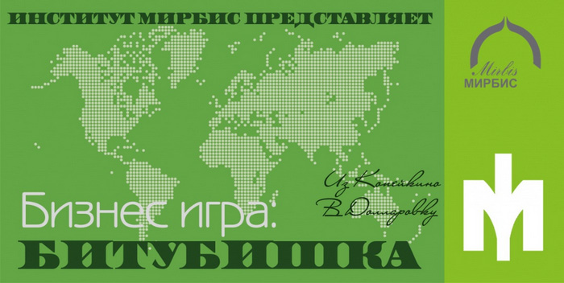

22 апреля 2014
Дорогие друзья! Спешим поделиться новостью! В апреле 2014 года пройдёт очно-заочный конкурс школьной журналистики XII открытого "Царскосельского форума школьной прессы", тема которого - «Культура и мы» . В нём примут участие редакционные коллективы из образовательных учреждений Санкт-Петербурга, Москвы, а также других регионов России.
В номинации «ПЕЧАТНЫЕ СМИ» школу «Золотое сечение» представляют сразу три издания: «Маргинал» (независимый журнал учащихся старшей школы), «SchooГрад» (журнал 8-го центра) и «First» (журнал 6-го центра).

В современном российском обществе сложились устойчивые тенденции к потребности коммуникативных умений, что в свою очередь вызвало рост интереса к языковой подготовке школьников и студентов вузов.
Стандартизованный экзамен IELTS может быть выделен как один из лучших сертификационных экзаменов на знание английского языка

На данном этапе ряд вузов России уже включился в подготовку своих студентов к международным экзаменам, как аттестационным. Так, например c 2010 года Национальный Исследовательский Университет – Высшая школа экономики - запустил экспериментальную подготовку своих студентов к сдаче экзамена IELTS, который в свою очередь сдается студентами, окончившими второй курс обучения для определения уровня коммуникативной компетенции.
"Битубишка" в МИРБИС
Классы обучаются по пятидневной учебной неделе.
| период | Учебный период | Каникулы |
| 3, 5, 6, 7, 8, 10 классы | ||
| 1 четверть | 3 сент. 2012 – 2 нояб. 2012 | 3 нояб. 2012 – 10 нояб. 2012 (8 дней) |
| 2 четверть | 3 сент. 2012 – 2 нояб. 2012 | 3 нояб. 2012 – 10 нояб. 2012 (8 дней) |
| 3 четверть | 3 сент. 2012 – 2 нояб. 2012 | 3 нояб. 2012 – 10 нояб. 2012 (8 дней) |
| 4 четверть | 3 сент. 2012 – 2 нояб. 2012 | |
| 9, 11 классы | ||
| 1 четверть | 3 сент. 2012 – 2 нояб. 2012 | 3 нояб. 2012 – 10 нояб. 2012 (8 дней) |
| 2 четверть | 3 сент. 2012 – 2 нояб. 2012 | 3 нояб. 2012 – 10 нояб. 2012 (8 дней) |
| 3 четверть | 3 сент. 2012 – 2 нояб. 2012 | 3 нояб. 2012 – 10 нояб. 2012 (8 дней) |
| 4 четверть | 3 сент. 2012 – 2 нояб. 2012 | |
16 марта 2014
{kind=link}
{kind=link}
{kind=link}
{kind=link}
{kind=link}
{kind=link}